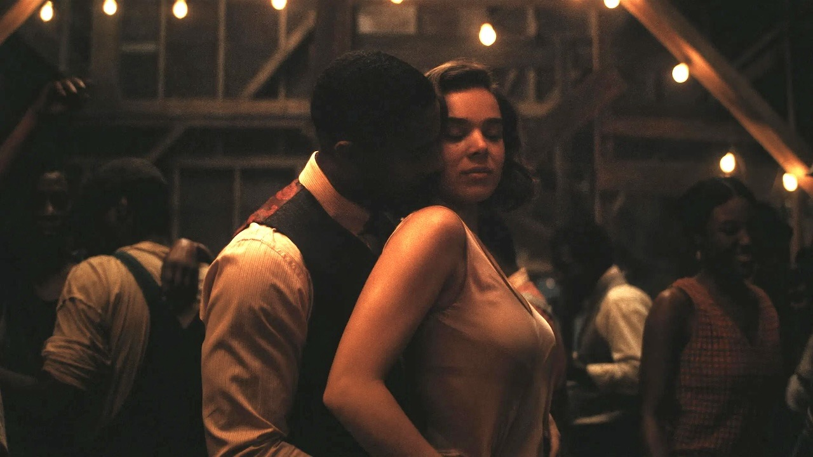

Let’s get something out of the way: Sinners is not your average vampire flick. It doesn’t sparkle, it sings. It doesn’t sprint, it sways. Directed by Ryan Coogler (yes, Wakanda’s own visionary), the film drips with southern gothic soul — and blood. We open in 1930s Mississippi, where the heat is thick, the music is thick, and the secrets? Even thicker.
The story centers around a Black church community haunted by literal demons and metaphorical ones too. A young woman named Clara returns home from New Orleans, only to find her preacher father battling more than just dwindling faith. Cue vampire lore woven into gospel hymns, moonlit rituals, and swampy elegance. It’s equal parts haunting and hypnotic. The music? A spiritual experience. Think ghostly blues, church organs that wail, and jazz so smooth it makes your spine twitch. There’s one performance scene that feels like Beyoncé got possessed by Billie Holiday and sang straight into hell’s microphone. I gasped. Visually, it’s stunning. Candlelit pews, foggy graveyards, and an eerie color palette of purples and rust reds. The blood pops. The shadows linger. Every frame feels like it’s hiding a sermon and a scream.
But here’s the kicker: Sinners isn’t just horror. It’s metaphor in a black veil. The vampires represent generational trauma, religious guilt, colonial curses — you name it. And while that makes it rich, it also makes it heavy. Some scenes feel like film school dissertations. Like yes, Ryan, I get the symbolism. Can we move the plot along? Michael B. Jordan plays a tortured reverend-turned-creature, and it’s giving "conflicted thirst trap." Hayley Steinfeld arrives mid-film as a ghostlike apparition tied to the town’s dark past, and she floats in and out like depression in a corset. Their chemistry? Spooky and sad. It works.
Where the film shines is in the horror aesthetics — crucifixes melting, hymnals soaked in blood, and slow dances with death. But where it stumbles? Pacing. There are stretches that sag under the weight of their own ambition. And yes, there’s one musical number that made me whisper, “Is this horror or American Idol’s séance night?”
Final Take: Sinners is a fever dream soaked in history, horror, and honey-thick style. It’s not for everyone — but if you love your scares with soul and symbolism, this one's a haunting hallelujah. Just don’t go in expecting jump scares. Go in expecting to feel something stir… deep.